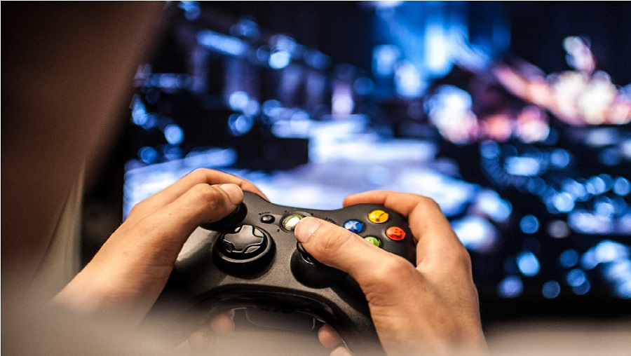

İlk Video Oyunu

1958 yılına kadar özellikle üniversitelerin araştırma laboratuvarlarında basit oyunlar ve simülasyonlar geliştirilse de bu oyunlar hareketli grafiklere sahip değildi. 1958’e gelindiğinde fizikçi William Higinbotham Tennis for Two adlı bir video oyunu geliştirdi. Osiloskop ekranında görüntülenebilen ve kolu çekip düğmeye basmaktan ibaret olan bu basit oyunda hareketli grafikler kullanıldığı için Tennis for Two tarihteki ilk video oyunu olarak kabul ediliyor.
Devamını Oku